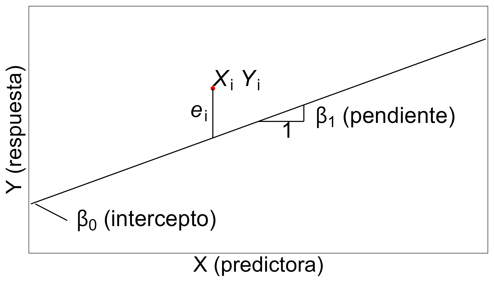
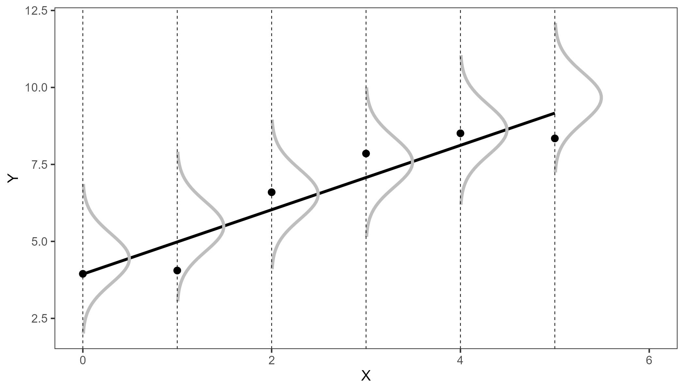
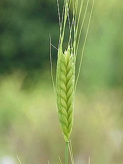

pacman::p_load(
# usos generales
tidyverse,
# exploracion
skimr,
GGally,
# correlation, #easystats
# modelado
## easystats https://easystats.github.io/easystats/
# performance,
# modelbased,
# see,
# parameters,
easystats, # carga todos
relaimpo,
ggeffects,
sjPlot
)
conflicted::conflict_prefer("filter", "dplyr")
conflicted::conflict_prefer("select", "dplyr")7 Regresión
7.1 Regresión lineal simple
\[\underbrace{Y}_{\substack{\text{variable} \\ \text{aleatoria}}} = f(X)=\underbrace{\beta_0 + \beta_1 X}_{\text{sistematico}} + \underbrace{\varepsilon}_{\text{aleatorio}}\] El componente sistemático captura la relación lineal entre las variables independientes y la variable dependiente y es utilizado para hacer predicciones o estimaciones de la variable dependiente en función de los valores de las variables independientes.
El componente sistemático no tiene en cuenta los posibles errores o perturbaciones en los datos, los cuales se modelan mediante el término de error del modelo.

El caso del modelo lineal simple tiene 2 parámetros, el intercepto y la pendiente, el primero representa el valor de la respuesta cuando X = 0. La pendiente representa el cambio de Y por cada cambio unitario de X. Si la pendiente no es distinta de 0, entonces no hay relación entre X e Y.

La línea recta resume la relación lineal entre la expectativa de Y y cada valor de X. También vemos que cada observación (puntos) es una realización de una variable aleatoria con distribución normal con expectativa condicionada por X y varianza constante.
- Supuestos
(Los pondremos a prueba con el paquete performance)
1 - Relación lineal de las variables.
Gráfico de Residuales vs Ajustados por el modelo. Una línea horizontal, sin patrones definidos, indicaría relación lineal.
2 - Los errores son variables aleatorias independientes con distribución normal
\[e_\text{iid} \sim N(0,\sigma^2_\varepsilon)\]
Gráfico Q-Q normal. Los puntos residuales deberían seguir la línea recta diagonal.
3 - Homogeneidad de varianza de los residuos (homocedasticidad)
Gráfico Scale-Location (o Spread-Location). La línea horizontal con puntos igualmente separados es una buena indicación de homocedasticidad.
4 - Identificar casos influyentes, es decir, valores extremos que pueden influir en los resultados de la regresión cuando se incluyen o excluyen del análisis. Esta trama se describirá más adelante en las próximas secciones.
5 - Ausencia de Multicolinealidad. Colinealidad significa que una cantidad sustancial de información contenida en algunas de los predictoras se puede unir como una función lineal de algunos de otra predictora del modelo.
Performance del modelo
RMSE: La raíz del error cuadrático medio. Esto mide la diferencia promedio entre las predicciones hechas por el modelo y las observaciones reales. Cuanto menor sea el RMSE, más fielmente podrá un modelo predecir las observaciones reales.
R2: Medida de la correlación entre las predicciones hechas por el modelo y las observaciones reales. Cuanto mayor sea el R-cuadrado, más fielmente podrá un modelo predecir las observaciones reales.
7.2 Regresión lineal múltiple
Generalización de la regresión lineal simple al caso de más de una variable independiente, y es un caso particular del modelo lineal general, restringido a una única variable dependiente. El modelo básico de regresión lineal múltiple es:
\[Y = \beta_0 + \beta_1X_1 + \beta_2X_2 + \cdots + \beta_pX_p + \varepsilon\] \(X\)s pueden ser:
- variables cuantitativas (y sus transformaciones)
- variables categóricas (como variables dummys 0/1)
- productos cruzados de las mismas variables (potencias), o diferentes variables (interacciones)
\(X\)s no puede ser:
- funciones lineales perfectas de otras predictoras
7.3 Estudio de caso: trigo diploide

Se midieron varios rasgos morfológicos de 190 semillas seleccionadas al azar de una línea de trigo diploide (Triticum monococcum). (Jing et al., 2007)
El objetivo era identificar variables asociadas con diferencias en el peso de las semillas
triticum <- rio::import("https://raw.githubusercontent.com/juanchiem/agro_data/master/triticum_monococcum.txt")
head(triticum)
Challenge
Exporte triticum a su carpeta “data” en formato .csv
Importelos nuevamente ahora desde su propia carpeta “data”
Las variables medidas fueron: ‘peso’ (mg), ‘diámetro’ (mm), ‘longitud’ (mm), ‘contenido de humedad’ (%) y ‘dureza’ del endosperma (valor índice del sistema de caracterización de grano único)
7.3.1 Exploración
str(triticum)triticum %>%
skim()¿Existen correlaciones entre las variables?
triticum %>%
select(-ID) %>%
ggpairs() +
theme_bw()Si lo prefieren en modo tabla:
triticum %>%
select(-ID) %>%
correlation()7.3.2 Ajuste de modelo
7.3.2.1 Regresión lineal simple
m_ls <- lm(
weight ~ diameter,
data = triticum
)# check_model(m0)
check_normality(m_ls)
check_heteroscedasticity(m_ls)Significancia de los parametros
anova(m_ls)Coeficientes
summary(m_ls)check_predictions(m_ls)
performance_accuracy(m_ls)7.3.2.2 Regresión lineal múltiple
m1 <- lm(
weight ~ length + diameter + hardness + moisture,
data = triticum
)check_normality(m1)
check_heteroscedasticity(m1)anova(m1)
# summary(m1)model_parameters(m1)Reajustar modelo
m2 <- lm(
weight ~ length + diameter + hardness,
data = triticum
)
# m2 <- update(m1, . ~ . -moisture)
compare_performance(m1, m2)Se redujo AIC, RMSE y aumentó R2 ajustado
7.3.3 Chequeo de supuestos
check_model(m2)# plot 1 - ¿Que capacidad predictiva tiene el modelo?
check_predictions(m_ls)
# plot 2 - ¿Queda algún patrón en los residuales?
check_model(m2, check = "ncv")
# plot 3 - ¿Son sus varianzas constantes?
check_heteroscedasticity(m2) %>% plot
# plot 4 - ¿Hay valores influyentes?
# check_model(m2, check = "binned_residuals")
# plot 5 - ¿Presencia de multicolinearidad?
# VIF > 10 indica seria grave multicolinearidad
check_collinearity(m2) %>% plot
# plot 6 - ¿Están los errores normalmente distribuidos?
check_normality(m2)Como era de esperar, longitud y diámetro tienen un VIF enorme.
m3 <- lm(
weight ~ diameter + hardness,
data = triticum
)# performance::
check_collinearity(m3) # corregimos multcol!
performance_accuracy(m3)
# compare_models(m2, m3)
compare_performance(m2, m3)# se ve que no se gana en precision pero el m2 tenia colinealidadanova(m3)
summary(m3)tab_model(m3)- Alrededor del 80% de la variabilidad del “peso” de la semilla se explica por el modelo que tiene “diámetro” y “dureza” como predictores
7.3.4 Contribucion de variables predictoras
# relaimpo::
ri_m <- calc.relimp(m3, type = "car", rela = TRUE )
ri_m
plot(ri_m)performance_accuracy(m3, method = "cv")7.3.5 Predicciones
check_predictions(m3)# modelbased::
estimate_relation(m3) %>%
plot(ribbon = list(alpha = 0)) # Make CI ribbon transparent for clarity# sjPlot::
plot_model(m3, type = "pred", terms = c("diameter", "hardness"))
plot_model(m3, type = "pred", terms = c("hardness", "diameter"))
# Se nota la mayor importancia de `diameter`en este grafico no?Cuánto será el peso del grano si tengo diameter=2.5 y hardness=-1
#ggeffects::
ggpredict(m3, terms = c("diameter [2.5]", "hardness [-1]"))A modo anecdotico vemos una interaccion de 2 var continuas
m4 <- lm(
weight ~ diameter * hardness,
data = triticum
)
anova(m4)
summary(m4)
compare_performance(m3, m4)
preds4 <- estimate_relation(m4)
plot(preds4, ribbon = list(alpha = 0)) # Make CI ribbon transparent for clarity
Xtra
Para validar un modelo es recomendable entrenarlo con un set de datos diferente del cual se haran las predicciones - validacion cruzada
# Create train and test dataset
train <- triticum %>% sample_frac(.70)
test <- anti_join(triticum, train, by = 'ID')# ajustamos los modelos con el train dataset
m0_1 <- lm(weight ~ diameter, data = train)
m3_1 <- lm(weight ~ diameter + hardness, data = train)
# colocamos las predicciones de cada modelo junto las observaciones reales
test <- test %>% mutate(pred_rls = predict(m0_1, test),
pred_rlm = predict(m3_1, test))La performance de los modelos se evalua con las siguientes métricas:
RMSE: La raíz del error cuadrático medio. Esto mide la diferencia promedio entre las predicciones hechas por el modelo y las observaciones reales. Cuanto menor sea el RMSE, más fielmente podrá un modelo predecir las observaciones reales.
Rsquared: Esta es una medida de la correlación entre las predicciones hechas por el modelo y las observaciones reales. Cuanto mayor sea el R-cuadrado, más fielmente podrá un modelo predecir las observaciones reales.
MAE: El error absoluto medio. Esta es la diferencia absoluta promedio entre las predicciones hechas por el modelo y las observaciones reales. Cuanto más bajo es el MAE, más cerca puede un modelo predecir las observaciones reales
library(caret)
data.frame(R2 = R2(test$pred_rls, test$weight),
RMSE = RMSE(test$pred_rls, test$weight),
MAE = MAE(test$pred_rls, test$weight))
data.frame(R2 = R2(test$pred_rlm, test$weight),
RMSE = RMSE(test$pred_rlm, test$weight),
MAE = MAE(test$pred_rlm, test$weight))Vemos mayor R2 y menor RMSE y MAE con rlm
7.4 Regresión polinomial
df <- data.frame(
hours = c(7.7,8.7,10.7,14.1,
7,14,14.4,11.6,11.3,5.6,7.1,6.8,11.9,8.8,
12.7,10,12.2,14.9,8.8,12.8,14.3,7.1,11.5,
6.3,7.7,8.9,5.1,8.8,13.7,8.4,9.8,11,9.9,6.9,
13.3,11.7,12.9,6.1,12.2,9.1,13.2,11.5,12.8,
10.5,10.3,12.9,5.2,9.8,12.3,11.9),
score = c(64.3,70.7,73.7,
86.1,59.8,83.6,89.1,78.1,78.4,59.1,65.9,60.8,
78.5,66.4,84.6,69.2,80,98.5,64.1,87.9,88.9,
65.5,75.7,60,64.3,71.4,60.5,66.8,91.5,70.4,
70.4,77.7,70.4,61.2,88.9,74.7,86.6,58.3,77.5,
65.5,81.7,72.2,85.1,77.5,75.6,87.5,58.6,70,
84.8,80.5)
)p1 <- df %>%
ggplot()+
aes(hours, score)+
geom_point()
p1
p1 + geom_smooth()p1 +
geom_smooth(method = lm)+
geom_smooth(method = lm, formula = y ~ poly(x, 2), col="red")base <- lm(score ~ poly(hours,1, raw=F), data=df)
check_model(base, check="linearity")quad <- lm(score ~ poly(hours,2, raw=F), data=df)
check_model(quad, check="linearity")compare_performance(base, quad)
summary(quad)estimate_relation(quad) %>%
plot(ribbon = list(alpha = .2)) +
theme_bw()